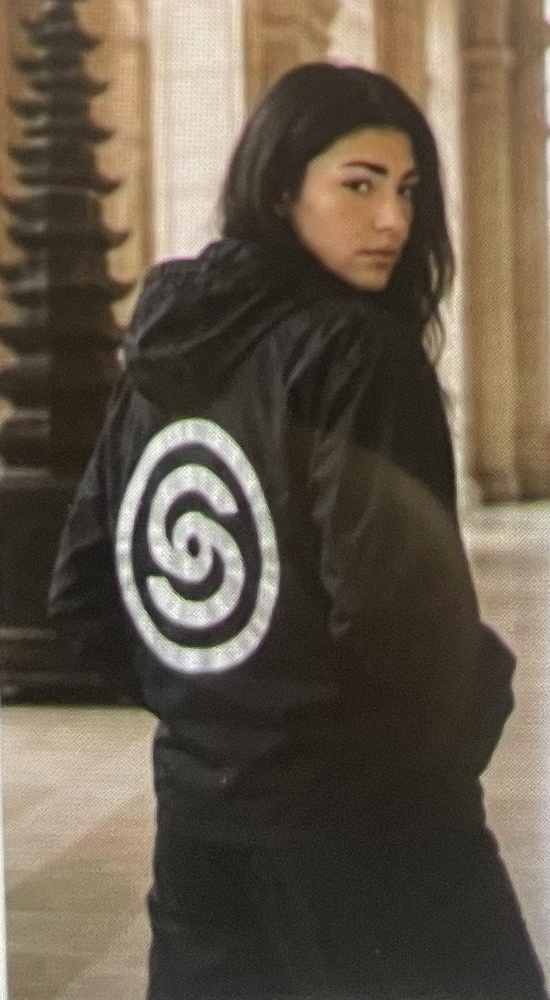
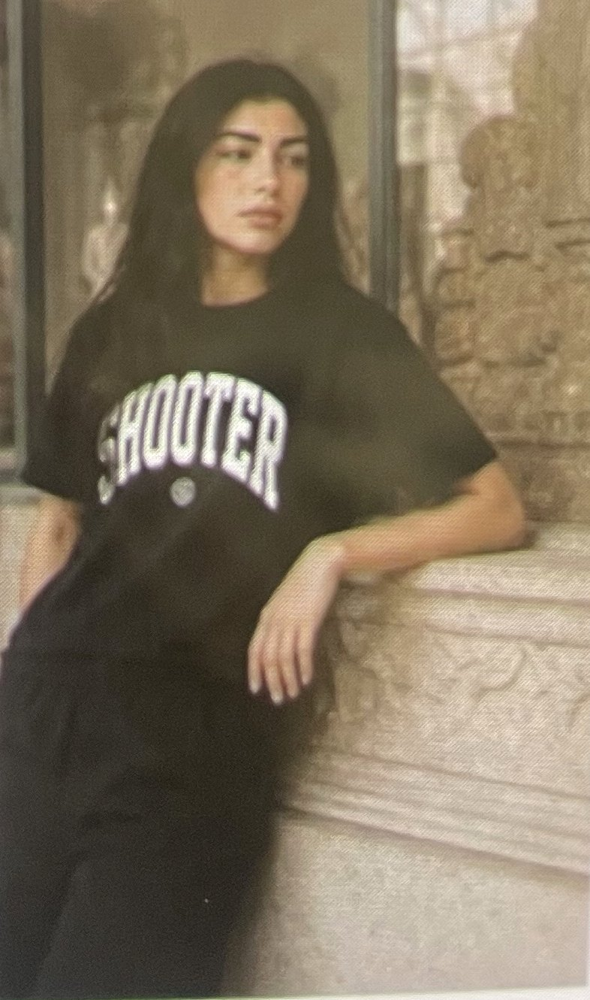

COLLECTION 01
SHOOTER
PARIS.
Né à Paris. Pensé sans frontières.
Un vestiaire pour ceux qui tracent leur voie.
01 / LE VESTIAIRE
DES PIÈCES. UNE SIGNATURE.Les essentiels.
Du noir. Du caractère.
Et rien de superflu.
Aperçu de la boutique · Prix indicatifs, à confirmer avant ouverture des ventes.

SHOOTER PARIS / ARCHIVES VISUELLES02 / RENCONTRE DES UNIVERS
Né dans la rue.
Pensé pour durer.
La force du noir. La précision du détail.
Des pièces faites pour être portées, partout.
Une même liberté de mouvement.
03 / L’ESPRIT SHOOTER
UNE ORIGINE.
AUCUNE LIMITE.
SHOOTER, c’est pas une question d’où tu viens. C’est une question d’où tu vises.
On vient de Paris, de la rue, des halls et des petits boulots. On a appris à viser juste avec ce qu’on avait. Aujourd’hui, on entre partout : dans la rue, dans les musées, dans les lieux qui n’étaient pas pensés pour nous. Pas pour imiter. Pour y laisser notre signature.
SHOOTER, c’est pour celles et ceux qui tracent leur trajectoire seuls. Qui bossent, qui sortent, qui profitent. Et qui n’oublient jamais d’où ils partent.
TROUVER SA SIGNATURE ↗
S / 0104 LE SYMBOLE
Une spirale.
Un mouvement.
Le « S » de SHOOTER s’enroule sur lui-même comme une trajectoire. Une ligne qui revient à son origine pour mieux repartir. Avancer, revenir plus fort, recommencer.
Une signature qui ne reste jamais immobile.
- Signature
- Le S en spirale
- Contraste
- Noir & blanc
- Esprit
- Sans frontières